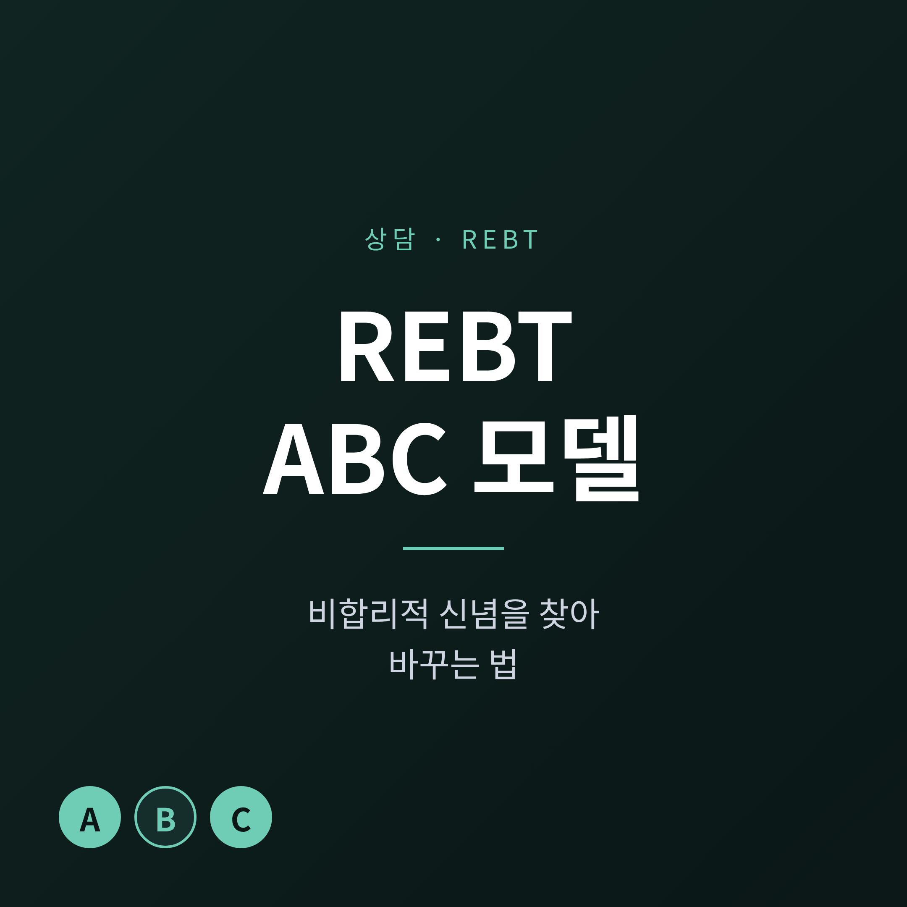
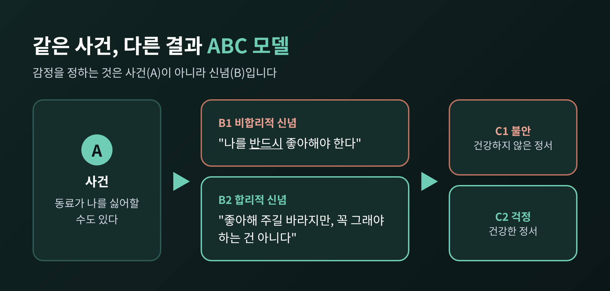
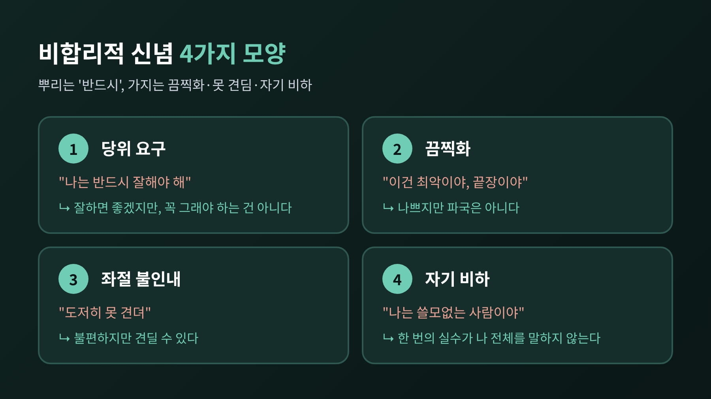
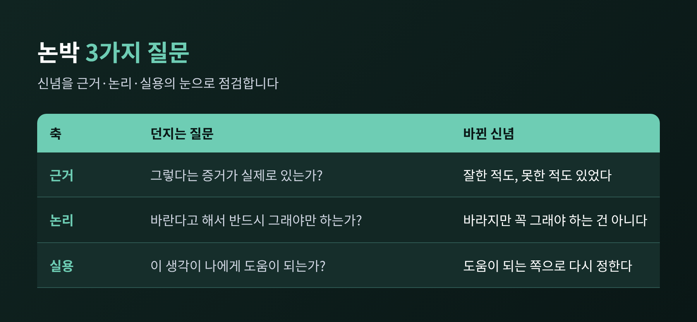
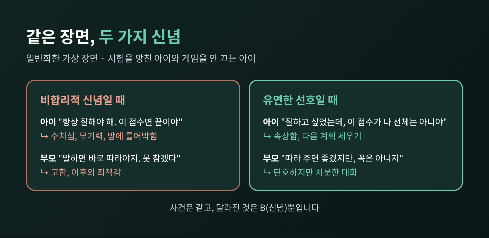
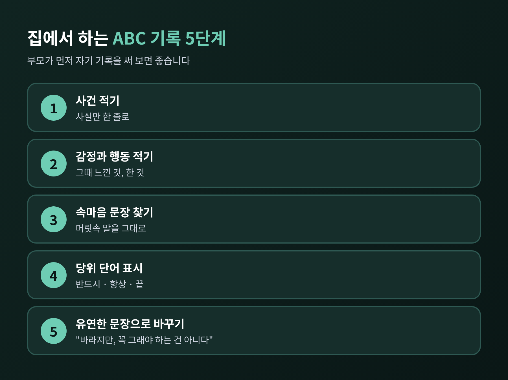

오늘은 엘리스의 REBT(합리적 정서 행동 치료)에서 가장 기본이 되는 ABC 모델을 정리해 보려 합니다. 같은 일을 겪고도 사람마다 감정이 다른 이유는, 사건이 아니라 사건을 받아들이는 신념에 있다는 것이 핵심입니다. 신념을 찾는 법과 바꾸는 법, 그리고 청소년과 가족 장면에서의 쓰임까지 차례로 살펴보겠습니다.
■ 사건이 감정을 만드는 것이 아니라 신념이 만듭니다
앨버트 엘리스는 1955년에 이 치료를 만들었고, 처음 이름은 '합리적 치료'였습니다. 이후 인지행동치료(CBT)의 선구 형태로 평가받아 왔습니다.
ABC 모델은 세 글자로 이루어집니다.
흔히 A가 C를 일으킨다고 생각합니다. REBT는 그 사이의 B를 짚습니다. 영국의 상담학자 드라이든(Dryden)이 든 예가 이를 잘 보여줍니다.
A: 동료가 나를 싫어할 수도 있다. B: "동료는 나를 반드시 좋아해야 한다." C: 불안.
같은 A라도 B가 "나는 동료가 좋아해 주길 바라지만, 꼭 그래야 하는 것은 아니다"라면 C는 불안이 아니라 걱정에 그칩니다. 사건은 같고 신념이 달랐을 뿐입니다.

여기서 눈여겨볼 점이 하나 있습니다. REBT는 감정을 없애라고 하지 않습니다. 불안, 우울, 죄책감, 수치심 같은 건강하지 않은 부정 정서를 걱정, 슬픔, 후회, 실망 같은 건강한 부정 정서로 옮기는 것이 목표입니다. 힘든 일에 아무 감정이 없는 상태를 지향하지 않습니다.
■ 비합리적 신념은 어떤 모양일까요
엘리스 연구소는 심리적 고통의 일차적 뿌리를 '당위'로 봅니다. '반드시', '~해야만 한다', '~하면 안 된다' 같은 경직된 규칙입니다. 자신에게, 타인에게, 세상에 모두 적용됩니다.
그리고 이 당위에서 세 가지가 파생됩니다.
GoodTherapy 같은 임상 안내서는 당위 요구, 자기 비하, 끔찍화, 낮은 좌절 인내를 네 범주로 묶어 설명합니다. 분류 방식은 자료마다 조금 다르지만, 뿌리가 '반드시'에 있다는 점은 같은 방향입니다.

그렇다면 왜 이런 신념을 '비합리적'이라 부를까요. 엘리스 연구소는 세 가지 이유를 듭니다.
첫째, 생존과 기본적인 만족을 넘어서 결과를 절대적으로 요구할 근거가 없습니다. 둘째, 상황을 바꾸려는 노력을 오히려 가로막습니다. 셋째, 대체로 뒷받침하는 증거가 없습니다.
드라이든은 합리적 신념의 조건도 정리했습니다. 유연하고, 극단적이지 않고, 사실에 부합하고, 논리적이며, 대체로 건설적이라는 것입니다. 비합리적 신념은 그 반대에 가깝습니다.
한 가지 오해는 짚어 두어야 합니다. 당위를 아예 버리라는 뜻이 아닙니다. 당위 뒤에는 대개 소중한 가치가 숨어 있습니다. 그래서 완전히 버리면 무관심이나 무기력으로 흐를 수 있고, 이 역시 비합리적이라고 봅니다. 당위를 '유연한 선호'로 바꾸는 것이 방향입니다.
엘리스 연구소의 예가 이를 보여줍니다. 시험에 떨어진 두 학생이 있습니다. 한 학생은 "붙었으면 좋았겠지만, 반드시 붙어야 할 이유는 없었다"고 생각합니다. 다른 학생은 "붙었어야 했는데, 나는 쓸모없다"고 생각합니다. 앞의 학생이 고통을 덜 겪습니다.
■ 신념을 바꾸는 단계, D와 E
ABC 뒤에는 D(논박)와 E(새로운 효과)가 붙어 ABCDE가 됩니다. 비합리적 신념에 질문을 던져 흔들고, 더 건강한 신념에서 나오는 건강한 결과를 얻는 과정입니다.
논박은 보통 세 축으로 이루어집니다. 근거가 있는가, 논리가 맞는가, 그 신념이 나에게 도움이 되는가를 묻습니다. 소크라테스식 질문, 비용과 편익 따져 보기, 다르게 바라보기(재구성) 같은 방법이 쓰이고, 사고 기록지 작성이나 역할극 같은 과제도 함께 활용됩니다.

한 가지 한계를 짚겠습니다. 드라이든은 비합리적임을 머리로 아는 '지적 이해'가 필요하지만 충분하지는 않다고 말합니다. 감정과 행동이 실제로 달라지려면 몸으로 느끼는 '정서적 이해'가 따라야 합니다. 한 번 읽고 끝나지 않고 반복해서 연습해야 하는 이유입니다.
주의할 상황도 있습니다. 가까운 사람을 잃은 애도의 시기에는 논리적 논박이 맞지 않습니다. 먼저 슬픔을 인정하고 정상적인 반응으로 받아 준 다음에야 ABC를 쓸 수 있습니다.
■ 청소년과 가족 장면에 적용하면
아래는 특정 사례가 아니라 일반화한 가상의 장면입니다.
시험을 망친 중학생이 방문을 닫고 나오지 않습니다. A: 기대한 점수보다 훨씬 낮은 성적표. B: "나는 항상 잘해야 해. 이 점수면 나는 끝이야." C: 수치심, 무기력, 방에 틀어박힘.
이때 부모의 첫 반응이 "괜찮아, 별일 아니야"라면 아이의 B는 그대로 남습니다. 대신 아이가 말하는 문장 속에서 '항상', '반드시', '끝'을 함께 찾아 보는 편이 낫습니다. "항상 잘해야 한다는 규칙은 누가 정했을까?", "이 점수가 너라는 사람 전체를 말해 줄까?" 같은 질문입니다. 따지는 말투가 아니라 궁금해하는 말투여야 합니다.
가족의 B도 있습니다. 부모에게도 신념이 있기 때문입니다.
A: 아이가 게임을 끄지 않고 대답을 한다. B: "부모 말에는 곧바로 따라야 한다. 이런 건 도저히 못 참겠다." C: 건강하지 않은 분노, 고함, 이후의 죄책감.

연구는 어떻게 말할까요. 아직 분명한 결론보다는 신중한 낙관에 가깝습니다.
세 연구는 대상과 방식이 달라 숫자를 직접 비교하기 어렵습니다. 효과가 있다는 방향은 같지만, 청소년에게 얼마나 확실한지는 앞으로 더 쌓여야 합니다.
연령에 따른 조정도 필요합니다. 12세 안팎보다 어린 아이는 추상적인 논박을 따라가기 어려울 수 있어 구체적인 예시와 몸을 쓰는 활동이 권장됩니다. 청소년은 비판으로 느껴지는 말에 민감하고 또래 집단으로 자신을 규정하는 경향이 있다고 알려져 있습니다. 그러니 가르치려는 어조보다 함께 따져 보는 어조가 맞습니다.
■ 가정에서 해 볼 수 있는 연습

부모가 먼저 자기 기록을 보여주는 방식이 효과적일 수 있다고 생각합니다. 아이에게 시키기 전에 부모의 B부터 들여다보는 것입니다.
끝으로 한 가지만 덧붙이겠습니다.
위 내용은 일반적인 이해를 돕기 위한 정보이며 진단이나 치료를 대신하지 않습니다. 아이가 오래 우울해 보이거나, 학교에 가지 못하거나, 자해나 극단적인 말을 한다면 혼자 해결하려 하지 마시고 학교 상담교사, 청소년상담복지센터, 정신건강의학과 등 전문 상담을 받으시길 권합니다. 위급한 상황이라면 지체 없이 도움을 요청하셔야 합니다. REBT를 쓰는 전문가를 찾으실 때는 자격과 수련 이력을 확인하시기 바랍니다.
결국 남는 것은 하나입니다. "문제는 사건이 아니라, 그 사건 앞에 붙인 '반드시'일 수 있습니다."
'반드시'를 '바라지만'으로 한 단어만 바꿔 읽어 보신다면, 오늘 저녁 식탁의 공기가 조금은 달라지지 않을까요.